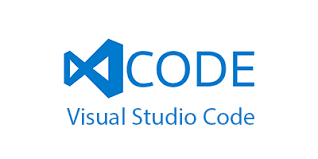

Visual Studio Code fue anunciado el 29 de abril de 2015 por Microsoft en la conferencia Build de 2015. Una versión preliminar se lanzó poco después. El 18 de noviembre de 2015, Visual Studio Code fue lanzado bajo la licencia MIT y su código fuente fue publicado en GitHub. También fue anunciada una nueva capacidad para agregar extensiones. El 14 de abril de 2016, Visual Studio Code graduó la etapa de vista previa pública y se lanzó a la web.
Visual Studio Code es un editor de código fuente desarrollado por Microsoft para Windows, Linux, macOS y Web. Incluye soporte para la depuración, control integrado de Git, resaltado de sintaxis, finalización inteligente de código, fragmentos y refactorización de código. También es personalizable, por lo que los usuarios pueden cambiar el tema del editor, los atajos de teclado y las preferencias. Es gratuito y de código abierto,12 aunque la descarga oficial está bajo software privativo e incluye características personalizadas por Microsoft.3 Visual Studio Code se basa en Electron, un framework que se utiliza para implementar Chromium y Node.js como aplicaciones para escritorio, que se ejecuta en el motor de diseño Blink. Aunque utiliza el framework Electron, el software no usa Atom y en su lugar emplea el mismo componente editor (Monaco) utilizado en Visual Studio Team Services (anteriormente llamado Visual Studio Online).4